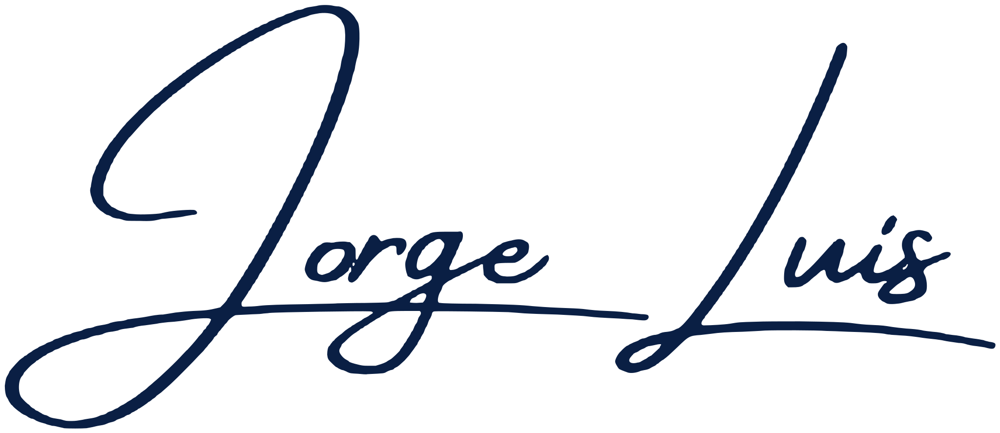

Automatización de procesos con Python
Tareas repetitivas como consolidar archivos, cruzar datos o enviar reportes, convertidas en procesos que corren solos.
Fondo azul oscuro con una red de nodos que fluye lentamente: la "animación tecnológica discreta". Se detiene sola si el visitante tiene activado "reducir movimiento".
Sistemas web, automatizaciones con Python y Excel, y reportes que se generan solos, hechos a la medida de tu negocio.
El engranaje representa el proceso y las líneas de circuito que salen de él son la parte digital: un proceso que se automatiza. El nombre de la marca dice directamente qué haces: Automatización & Sistemas. Funciona sobre fondo claro y oscuro, y también como ícono de la pestaña del navegador.
Alternativas, por si prefieres otra idea:
Vectoricé tu firma para que se vea nítida en cualquier tamaño. No aparece en el encabezado: va al cierre de "Sobre mí" y en el pie de página de todo el sitio, como autor.


El azul oscuro va en el menú, los títulos y los botones principales. El celeste eléctrico es solo de acento: se usa poco para que destaque. Sobre fondo blanco, los enlaces usan un celeste más oscuro para que se lean bien.
#0A1F44#173A7A#00B4FF#006CB5#FFFFFF#F5F7FA#5B6B80#0F172AColores de estado, solo para formularios y demostraciones: Correcto Stock bajo Error
Plus Jakarta Sans para títulos (moderna y con carácter) e Inter para textos (muy legible en pantallas pequeñas). Las dos se alojan en el propio sitio, pesan menos de 80 KB en total y tienen licencia libre (SIL OFL).
Cuéntame qué necesitas y desarrollaré una solución a tu medida. Analizo cómo trabaja hoy tu equipo, identifico las tareas repetitivas y las convierto en un sistema que ahorra horas cada semana.
Todos los botones miden al menos 48 px de alto para tocarlos cómodamente en el celular.
Las de servicio son breves y van con ícono. Las de proyecto tienen todo lo que pide el brief: captura, problema que resuelve, funcionalidades y los dos botones. La captura de abajo es provisional: se reemplazará por una captura real de la demo cuando esté terminada.
Tareas repetitivas como consolidar archivos, cruzar datos o enviar reportes, convertidas en procesos que corren solos.
Planillas que se llenan, validan y consolidan sin copiar y pegar, con menos errores y en minutos en vez de horas.
Para negocios que controlan su stock en cuadernos o en planillas sueltas y se enteran tarde de los faltantes.
El mismo estilo se usa en el Inicio y dentro de las demostraciones. Las cifras de esta muestra son solo de ejemplo.
Estados normal, con error y mensaje de resultado. La letra de los campos mide 16 px para que el iPhone no haga zoom al escribir.
Es una sola página con menú fijo. Cada sección termina con un llamado a la acción, y las demostraciones abren en páginas propias.
Propuesta de valor, animación de red y 3 indicadores de confianza.
Conoce mis soluciones · Solicita una demostraciónFranja de problemas comunes: copiar y pegar, reportes a mano, información dispersa.
Automatiza tu negocioLos 7 servicios del brief, en tarjetas con ícono.
Cuéntame qué necesitas8 tarjetas generadas desde data/proyectos.json, con filtro por tipo. Las que aún no están construidas aparecen como "Próximamente".
4 pasos: diagnóstico, propuesta, desarrollo y acompañamiento.
Foto, trayectoria en contabilidad, administración y RR. HH. con enfoque multisector, y algunos casos reales de automatización.
El texto termina con tu firma, como una carta de presentación.
Botón de WhatsApp y formulario con validaciones, enviado con Web3Forms.
Cuéntame qué necesitas y desarrollaré una solución a tu medidaLogotipo, enlaces y "Diseñado y desarrollado por" con tu firma.
jorgeluis-portafolio/ ├── index.html # página principal (Etapa 2) ├── estilo/index.html # esta guía (interna, no se indexa) ├── assets/ │ ├── css/ variables.css · base.css · componentes.css · secciones.css │ ├── js/ main.js · portafolio.js · contacto.js · config.js │ ├── fonts/ Plus Jakarta Sans · Inter │ └── img/ logo-marca.svg · firma-*.svg · capturas/ · foto.webp ├── data/proyectos.json # las 8 tarjetas del portafolio ├── demos/inventario/ # Etapa 4 — SQLite en el navegador ├── python/ # proyectos independientes (Excel, PDF) └── README.md